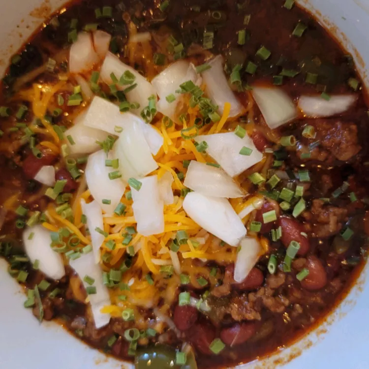

Touchdown Chili!

Description
Every year when football season rolls around and the weather begins to cool, my husband requests I make this hearty, beanless chili. It receives rave reviews from everyone.
Ingredients
2 pounds ground beef
1 large onion, chopped
6 cloves garlic, chopped
⅓ cup chili powder
1 ½ teaspoons ground cumin
1 ½ teaspoons dried basil
1 (28 ounce) can diced tomatoes with juice
1 (4 ounce) can diced green chile peppers, drained
1 (15 ounce) can tomato sauce
1 (12 fluid ounce) can or bottle beer
1 tablespoon white vinegar
3 tablespoons brown sugar
1 teaspoon hot pepper sauce (e.g. Tabasco™)
2 teaspoons salt
½ teaspoon ground black pepper
Steps
- Place the ground beef, onion and garlic in a large saucepan over medium heat. Cook, stirring to crumble the beef, until the beef is no longer pink and the onion is tender. Drain off the fat and return the pan to the stove. Combine the chili powder, cumin and basil; sprinkle over the beef. Cook and stir to coat the meat and toast the spices a little.
- Pour in the tomatoes, green chilies, tomato sauce, beer and vinegar. Bring to a boil and stir to loosen any bits that are stuck to the bottom of the pan. Mix in the brown sugar, hot pepper sauce, salt and pepper. Reduce the heat to low, cover and simmer for 3 hours. Remove the lid for the last 30 minutes of cooking.